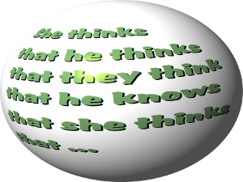

Recursive Functions
Definition

Recursion has something to do with infinity. I know recursion has something to do with infinity.
I think I know recursion has something to do with infinity. He is sure I think I know recursion
has something to do with infinity. We doubt he is sure I think ...
We think, we convinced you now,
that we can go on forever with this example of a recursion from natural language. Recursion is not
only a fundamental feature of natural language, but of the human cognitive capacity. Our way of thinking
is based on recursive thinking processes. Even with a very simple grammar, like "An English sentence
contains a subject and a predicate. A predicate contains a verb, an object and a complement", we can
demonstrate the infinite possibilites of the natural language. Stephen Pinker phrases it like this:
"With a few thousand nouns that can fill the subject slot and a few thousand verbs that can fill the
predicate slot, one already has several million ways to open a sentence. The possible combinations
quickly multiply out to unimaginably large numbers. Indeed, the repertoire of sentences is theoretically
infinite, because the rules of language use a trick called recursion. A recursive rule allows a phrase
to contain an example of itself, as in She thinks that he thinks that they think that he knows
and so on, ad infinitum. And if the number of sentences is infinite, the number of possible thoughts
and intentions is infinite too, because virtually every sentence expresses a different thought or
intention."1
We have to stop our short excursion to recursion in natural languages to come back to recursion in computer
science and finally to recursion in the programming language Python.
The adjective "recursive" originates from the Latin verb "recurrere", which means "to run back".
And this is what a recursive definition or a recursive function does: It is "running back" or returning
to itself. Most people who have done some mathematics, computer science or read a book about programming
will have encountered the factorial, which is defined in mathematical terms as
n! = n * (n-1)!, if n > 1 and f(1) = 1
Definition of Recursion
Recursion is a way of programming or coding a problem, in which a function calls itself one or more times in its body. Usually, it is returning the return value of this function call. If a function definition fulfills the condition of recursion, we call this function a recursive function.Termination condition:
A recursive function has to terminate to be used in a program. A recursive function terminates, if with every recursive call the solution of the problem is downsized and moves towards a base case. A base case is a case, where the problem can be solved without further recursion. A recursion can lead to an infinite loop, if the base case is not met in the calls.
Example:
4! = 4 * 3!
3! = 3 * 2!
2! = 2 * 1
Replacing the calculated values gives us the following expression
4! = 4 * 3 * 2 * 1
Generally we can say: Recursion in computer science is a method where the solution to a problem is based on solving smaller instances of the same problem.
Recursive Functions in Python
Now we come to implement the factorial in Python. It's as easy and elegant as the mathematical definition.
def factorial(n):
if n == 1:
return 1
else:
return n * factorial(n-1)
We can track how the function works by adding two print() function to the previous function
definition:
def factorial(n):
print("factorial has been called with n = " + str(n))
if n == 1:
return 1
else:
res = n * factorial(n-1)
print("intermediate result for ", n, " * factorial(" ,n-1, "): ",res)
return res
print(factorial(5))
This Python script outputs the following results:
factorial has been called with n = 5 factorial has been called with n = 4 factorial has been called with n = 3 factorial has been called with n = 2 factorial has been called with n = 1 intermediate result for 2 * factorial( 1 ): 2 intermediate result for 3 * factorial( 2 ): 6 intermediate result for 4 * factorial( 3 ): 24 intermediate result for 5 * factorial( 4 ): 120 120Let's have a look at an iterative version of the factorial function.
def iterative_factorial(n):
result = 1
for i in range(2,n+1):
result *= i
return result
The Pitfalls of Recursion
This subchapter of our tutorial on recursion deals with the Fibonacci numbers. What do have sunflowers, the Golden ratio, fur tree cones, The Da Vinci Code and the song "Lateralus" by Tool in common. Right, the Fibonacci numbers.The Fibonacci numbers are the numbers of the following sequence of integer values:
0,1,1,2,3,5,8,13,21,34,55,89, ...
The Fibonacci numbers are defined by:
Fn = Fn-1 + Fn-2
with
F0 = 0
and F1 = 1
The Fibonacci sequence is named after the mathematician Leonardo of Pisa, who is better known as Fibonacci. In his book "Liber Abaci" (publishes 1202) he introduced the sequence as an exercise dealing with bunnies. His sequence of the Fibonacci numbers begins with F1 = 1, while in modern mathematics the sequence starts with F0 = 0. But this has no effect on the other members of the sequence.
The Fibonacci numbers are the result of an artificial rabbit population, satisfying the following conditions:
- a newly born pair of rabbits, one male, one female, build the initial population
- these rabbits are able to mate at the age of one month so that at the end of its second month a female can bring forth another pair of rabbits
- these rabbits are immortal
- a mating pair always produces one new pair (one male, one female) every month from the second month onwards
The Fibonacci numbers are easy to write as a Python function. It's more or less a one to one mapping from the mathematical definition:
def fib(n):
if n == 0:
return 0
elif n == 1:
return 1
else:
return fib(n-1) + fib(n-2)
An iterative solution for the problem is also easy to write, though the recursive solution looks more like the mathematical definition:
def fibi(n):
a, b = 0, 1
for i in range(n):
a, b = b, a + b
return a
If you check the functions fib() and fibi(), you will find out, that the iterative version fibi()
is a lot faster than the recursive version fib(). To get an idea of how much this "a lot faster" can be,
we have written a script where we you the timeit module to measure the calls:
from timeit import Timer
from fibo import fib
t1 = Timer("fib(10)","from fibo import fib")
for i in range(1,41):
s = "fib(" + str(i) + ")"
t1 = Timer(s,"from fibo import fib")
time1 = t1.timeit(3)
s = "fibi(" + str(i) + ")"
t2 = Timer(s,"from fibo import fibi")
time2 = t2.timeit(3)
print("n=%2d, fib: %8.6f, fibi: %7.6f, percent: %10.2f" % (i, time1, time2, time1/time2))
time1 is the time in seconds it takes for 3 calls to fib(n) and time2 respectively the time for fibi().
If we look at the results, we can see, that calling fib(20) three times needs about 14 milliseconds.
fibi(20) needs just 0.011 milliseconds for 3 calls. So fibi(20) is about 1300 times faster then fib(20).
fib(40) needs already 215 seconds for three calls, while fibi(40) can do it in 0.016 milliseconds. fibi(40) is more than 13 millions times faster than fib(40).
n= 1, fib: 0.000004, fibi: 0.000005, percent: 0.81 n= 2, fib: 0.000005, fibi: 0.000005, percent: 1.00 n= 3, fib: 0.000006, fibi: 0.000006, percent: 1.00 n= 4, fib: 0.000008, fibi: 0.000005, percent: 1.62 n= 5, fib: 0.000013, fibi: 0.000006, percent: 2.20 n= 6, fib: 0.000020, fibi: 0.000006, percent: 3.36 n= 7, fib: 0.000030, fibi: 0.000006, percent: 5.04 n= 8, fib: 0.000047, fibi: 0.000008, percent: 5.79 n= 9, fib: 0.000075, fibi: 0.000007, percent: 10.50 n=10, fib: 0.000118, fibi: 0.000007, percent: 16.50 n=11, fib: 0.000198, fibi: 0.000007, percent: 27.70 n=12, fib: 0.000287, fibi: 0.000007, percent: 41.52 n=13, fib: 0.000480, fibi: 0.000007, percent: 69.45 n=14, fib: 0.000780, fibi: 0.000007, percent: 112.83 n=15, fib: 0.001279, fibi: 0.000008, percent: 162.55 n=16, fib: 0.002059, fibi: 0.000009, percent: 233.41 n=17, fib: 0.003439, fibi: 0.000011, percent: 313.59 n=18, fib: 0.005794, fibi: 0.000012, percent: 486.04 n=19, fib: 0.009219, fibi: 0.000011, percent: 840.59 n=20, fib: 0.014366, fibi: 0.000011, percent: 1309.89 n=21, fib: 0.023137, fibi: 0.000013, percent: 1764.42 n=22, fib: 0.036963, fibi: 0.000013, percent: 2818.80 n=23, fib: 0.060626, fibi: 0.000012, percent: 4985.96 n=24, fib: 0.097643, fibi: 0.000013, percent: 7584.17 n=25, fib: 0.157224, fibi: 0.000013, percent: 11989.91 n=26, fib: 0.253764, fibi: 0.000013, percent: 19352.05 n=27, fib: 0.411353, fibi: 0.000012, percent: 34506.80 n=28, fib: 0.673918, fibi: 0.000014, percent: 47908.76 n=29, fib: 1.086484, fibi: 0.000015, percent: 72334.03 n=30, fib: 1.742688, fibi: 0.000014, percent: 123887.51 n=31, fib: 2.861763, fibi: 0.000014, percent: 203442.44 n=32, fib: 4.648224, fibi: 0.000015, percent: 309461.33 n=33, fib: 7.339578, fibi: 0.000014, percent: 521769.86 n=34, fib: 11.980462, fibi: 0.000014, percent: 851689.83 n=35, fib: 19.426206, fibi: 0.000016, percent: 1216110.64 n=36, fib: 30.840097, fibi: 0.000015, percent: 2053218.13 n=37, fib: 50.519086, fibi: 0.000016, percent: 3116064.78 n=38, fib: 81.822418, fibi: 0.000015, percent: 5447430.08 n=39, fib: 132.030006, fibi: 0.000018, percent: 7383653.09 n=40, fib: 215.091484, fibi: 0.000016, percent: 13465060.78
What's wrong with our recursive implementation?
Let's have a look at the calculation tree, i.e. the order in which the functions are called. fib() is substituted by fib().

We can see, that the subtree f(2) appears 3 times and the subtree for the calculation of f(3) two times. If you imagine extending this tree for f(6), you will understand, that f(4) will be called two times, f(3) three times and so on. This means, our recursion doesn't remember previously calculated values.
We can implement a "memory" for our recusive version by using a dictionary to save the previously calculated values.
memo = {0:0, 1:1}
def fibm(n):
if not n in memo:
memo[n] = fibm(n-1) + fibm(n-2)
return memo[n]
We time it again to compare it with fibi():
from timeit import Timer
from fibo import fib
t1 = Timer("fib(10)","from fibo import fib")
for i in range(1,41):
s = "fibm(" + str(i) + ")"
t1 = Timer(s,"from fibo import fibm")
time1 = t1.timeit(3)
s = "fibi(" + str(i) + ")"
t2 = Timer(s,"from fibo import fibi")
time2 = t2.timeit(3)
print("n=%2d, fib: %8.6f, fibi: %7.6f, percent: %10.2f" % (i, time1, time2, time1/time2))
We can see, that it is even faster than the iterative version. Of course, the larger the arguments the greater the benefit of our memoisation:
n= 1, fib: 0.000011, fibi: 0.000015, percent: 0.73 n= 2, fib: 0.000011, fibi: 0.000013, percent: 0.85 n= 3, fib: 0.000012, fibi: 0.000014, percent: 0.86 n= 4, fib: 0.000012, fibi: 0.000015, percent: 0.79 n= 5, fib: 0.000012, fibi: 0.000016, percent: 0.75 n= 6, fib: 0.000011, fibi: 0.000017, percent: 0.65 n= 7, fib: 0.000012, fibi: 0.000017, percent: 0.72 n= 8, fib: 0.000011, fibi: 0.000018, percent: 0.61 n= 9, fib: 0.000011, fibi: 0.000018, percent: 0.61 n=10, fib: 0.000010, fibi: 0.000020, percent: 0.50 n=11, fib: 0.000011, fibi: 0.000020, percent: 0.55 n=12, fib: 0.000004, fibi: 0.000007, percent: 0.59 n=13, fib: 0.000004, fibi: 0.000007, percent: 0.57 n=14, fib: 0.000004, fibi: 0.000008, percent: 0.52 n=15, fib: 0.000004, fibi: 0.000008, percent: 0.50 n=16, fib: 0.000003, fibi: 0.000008, percent: 0.39 n=17, fib: 0.000004, fibi: 0.000009, percent: 0.45 n=18, fib: 0.000004, fibi: 0.000009, percent: 0.45 n=19, fib: 0.000004, fibi: 0.000009, percent: 0.45 n=20, fib: 0.000003, fibi: 0.000010, percent: 0.29 n=21, fib: 0.000004, fibi: 0.000009, percent: 0.45 n=22, fib: 0.000004, fibi: 0.000010, percent: 0.40 n=23, fib: 0.000004, fibi: 0.000010, percent: 0.40 n=24, fib: 0.000004, fibi: 0.000011, percent: 0.35 n=25, fib: 0.000004, fibi: 0.000012, percent: 0.33 n=26, fib: 0.000004, fibi: 0.000011, percent: 0.34 n=27, fib: 0.000004, fibi: 0.000011, percent: 0.35 n=28, fib: 0.000004, fibi: 0.000012, percent: 0.32 n=29, fib: 0.000004, fibi: 0.000012, percent: 0.33 n=30, fib: 0.000004, fibi: 0.000013, percent: 0.31 n=31, fib: 0.000004, fibi: 0.000012, percent: 0.34 n=32, fib: 0.000004, fibi: 0.000012, percent: 0.33 n=33, fib: 0.000004, fibi: 0.000013, percent: 0.30 n=34, fib: 0.000004, fibi: 0.000012, percent: 0.34 n=35, fib: 0.000004, fibi: 0.000013, percent: 0.31 n=36, fib: 0.000004, fibi: 0.000013, percent: 0.31 n=37, fib: 0.000004, fibi: 0.000014, percent: 0.29 n=38, fib: 0.000004, fibi: 0.000014, percent: 0.29 n=39, fib: 0.000004, fibi: 0.000013, percent: 0.31 n=40, fib: 0.000004, fibi: 0.000014, percent: 0.29
Exercises
- Think of a recusive version of the function f(n) = 3 * n, i.e. the multiples of 3
- Write a recursive Python function that returns the sum of the first
nintegers.
(Hint: The function will be similiar to the factorial function!) - Write a function which implements the Pascal's triangle:
1
1 1
1 2 1
1 3 3 1
1 4 6 4 1
1 5 10 10 5 1
- You find further exercises on our Python3 version of recursive functions, e.g. creating the Fibonacci numbers out of Pascal's triangle or producint the prime numbers recursively, using the Sieve of Eratosthenes.
Solutions to our Exercises
-
Solution to our first exercise on recursion:
Mathematically, we can write it like this:
f(1) = 3,
f(n+1) = f(n) + 3
A Python function can be written like this:def mult3(n): if n == 1: return 3 else: return mult3(n-1) + 3 for i in range(1,10): print(mult3(i)) -
Solution to our second exercise:
def sum_n(n): if n== 0: return 0 else: return n + sum_n(n-1) -
Solution for creating the Pacal triangle:
def pascal(n): if n == 1: return [1] else: line = [1] previous_line = pascal(n-1) for i in range(len(previous_line)-1): line.append(previous_line[i] + previous_line[i+1]) line += [1] return line print(pascal(6))Alternatively, we can write a function using list comprehension:
def pascal(n): if n == 1: return [1] else: p_line = pascal(n-1) line = [ p_line[i]+p_line[i+1] for i in range(len(p_line)-1)] line.insert(0,1) line.append(1) return line print(pascal(6))
1 Stephen Pinker, The Blank Slate, 2002